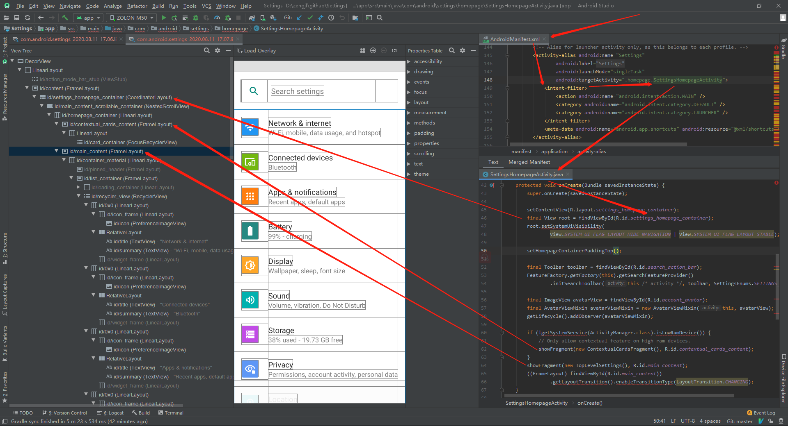

Settings Analysis
Android Settings分析
参考文档
Layout Inspector使用方法
[Tools] -> [Layout Inspector] -> [Show all processes] -> [com.android.settings] -> [Select Window] -> [com.android.settings.Settings]
Settings Entry

TopLevelSettings
TopLevelSettings.java处理信息
* packages/apps/Settings/src/com/android/settings/homepage/TopLevelSettings.java
* public class TopLevelSettings extends DashboardFragment implements PreferenceFragmentCompat.OnPreferenceStartFragmentCallback
* protected int getPreferenceScreenResId() { return R.xml.top_level_settings; }
* packages/apps/Settings/res/xml/top_level_settings.xml
top_level_settings.xml布局信息如下
[...省略]
<PreferenceScreen
xmlns:android="http://schemas.android.com/apk/res/android"
xmlns:settings="http://schemas.android.com/apk/res-auto"
android:key="top_level_settings">
<Preference
android:key="top_level_network"
android:title="@string/network_dashboard_title"
android:summary="@string/summary_placeholder"
android:icon="@drawable/ic_homepage_network"
android:order="-120"
android:fragment="com.android.settings.network.NetworkDashboardFragment"
settings:controller="com.android.settings.network.TopLevelNetworkEntryPreferenceController"/>
<Preference
android:key="top_level_connected_devices"
android:title="@string/connected_devices_dashboard_title"
android:summary="@string/summary_placeholder"
android:icon="@drawable/ic_homepage_connected_device"
android:order="-110"
android:fragment="com.android.settings.connecteddevice.ConnectedDeviceDashboardFragment"
settings:controller="com.android.settings.connecteddevice.TopLevelConnectedDevicesPreferenceController"/>
<Preference
android:key="top_level_apps_and_notifs"
android:title="@string/app_and_notification_dashboard_title"
android:summary="@string/app_and_notification_dashboard_summary"
android:icon="@drawable/ic_homepage_apps"
android:order="-100"
android:fragment="com.android.settings.applications.AppAndNotificationDashboardFragment"/>
[...省略]
</PreferenceScreen>
可以看到主界面对应布局 top_level_settings.xml中都是一个个Preference，也就对应了主页面每一个条目，可以看到 xml 中 Preference数目和主界面显示数目是不对等了，为啥呢？因为存在动态添加的，查阅 TopLevelSettings 代码发现没啥特殊而且代码量很少，看到 TopLevelSettings 继承 DashboardFragment。主要是因为 DashboardFragment 动态加载
packages/apps/Settings/src/com/android/settings/dashboard/DashboardFragment.java
public abstract class DashboardFragment extends SettingsPreferenceFragment
implements SettingsBaseActivity.CategoryListener, Indexable,
SummaryLoader.SummaryConsumer, PreferenceGroup.OnExpandButtonClickListener,
BasePreferenceController.UiBlockListener {
// ...省略
@Override
public void onAttach(Context context) {
super.onAttach(context);
mSuppressInjectedTileKeys = Arrays.asList(context.getResources().getStringArray(
R.array.config_suppress_injected_tile_keys));
mDashboardFeatureProvider = FeatureFactory.getFactory(context).
getDashboardFeatureProvider(context);
final List<AbstractPreferenceController> controllers = new ArrayList<>();
// Load preference controllers from code
final List<AbstractPreferenceController> controllersFromCode =
createPreferenceControllers(context);
// Load preference controllers from xml definition
final List<BasePreferenceController> controllersFromXml = PreferenceControllerListHelper
.getPreferenceControllersFromXml(context, getPreferenceScreenResId());
// Filter xml-based controllers in case a similar controller is created from code already.
final List<BasePreferenceController> uniqueControllerFromXml =
PreferenceControllerListHelper.filterControllers(
controllersFromXml, controllersFromCode);
// Add unique controllers to list.
if (controllersFromCode != null) {
controllers.addAll(controllersFromCode);
}
controllers.addAll(uniqueControllerFromXml);
// And wire up with lifecycle.
final Lifecycle lifecycle = getSettingsLifecycle();
uniqueControllerFromXml
.stream()
.filter(controller -> controller instanceof LifecycleObserver)
.forEach(
controller -> lifecycle.addObserver((LifecycleObserver) controller));
mPlaceholderPreferenceController =
new DashboardTilePlaceholderPreferenceController(context);
controllers.add(mPlaceholderPreferenceController);
for (AbstractPreferenceController controller : controllers) {
addPreferenceController(controller);
}
// ...省略
}
分析NetworkDashboardFragment启动Wifi，其中android:fragment="com.android.settings.wifi.WifiSettings"即进入Wifi设置界面
* com/android/settings/network/NetworkDashboardFragment.java
* protected int getPreferenceScreenResId()
* return R.xml.network_and_internet;
* android:fragment="com.android.settings.wifi.WifiSettings"
* public void onStart()
* mWifiEnabler = createWifiEnabler();
* final SettingsActivity activity = (SettingsActivity) getActivity();
* return new WifiEnabler(activity, new SwitchBarController(activity.getSwitchBar()), mMetricsFeatureProvider);
* public class SwitchBarController extends SwitchWidgetController implements SwitchBar.OnSwitchChangeListener
* public void onSwitchChanged(Switch switchView, boolean isChecked)
* mListener.onSwitchToggled(isChecked);
* 调用WifiEnabler中的onSwitchToggled()
* public class WifiEnabler implements SwitchWidgetController.OnSwitchChangeListener
* public boolean onSwitchToggled(boolean isChecked)
* mWifiManager.setWifiEnabled(isChecked)
Wifi设置界面添加网络
在src/main/java/com/android/settings/wifi/WifiSettings.java设置界面中，点击添加网络，触发如下事件：
@Override
public boolean onPreferenceTreeClick(Preference preference) {
// If the preference has a fragment set, open that
if (preference.getFragment() != null) {
preference.setOnPreferenceClickListener(null);
return super.onPreferenceTreeClick(preference);
}
if (preference instanceof LongPressAccessPointPreference) {
mSelectedAccessPoint = ((LongPressAccessPointPreference) preference).getAccessPoint();
if (mSelectedAccessPoint == null) {
return false;
}
if (mSelectedAccessPoint.isActive()) {
return super.onPreferenceTreeClick(preference);
}
/**
* Bypass dialog and connect to unsecured networks, or previously connected saved
* networks, or Passpoint provided networks.
*/
switch (WifiUtils.getConnectingType(mSelectedAccessPoint)) {
case WifiUtils.CONNECT_TYPE_OSU_PROVISION:
mSelectedAccessPoint.startOsuProvisioning(mConnectListener);
mClickedConnect = true;
break;
case WifiUtils.CONNECT_TYPE_OPEN_NETWORK:
mSelectedAccessPoint.generateOpenNetworkConfig();
connect(mSelectedAccessPoint.getConfig(), mSelectedAccessPoint.isSaved());
break;
case WifiUtils.CONNECT_TYPE_SAVED_NETWORK:
connect(mSelectedAccessPoint.getConfig(), true /* isSavedNetwork */);
break;
default:
showDialog(mSelectedAccessPoint, WifiConfigUiBase.MODE_CONNECT);
break;
}
} else if (preference == mAddWifiNetworkPreference) {
onAddNetworkPressed();
} else {
return super.onPreferenceTreeClick(preference);
}
return true;
}
/**
* Called when "add network" button is pressed.
*/
private void onAddNetworkPressed() {
// No exact access point is selected.
mSelectedAccessPoint = null;
launchAddNetworkFragment();
}
private void launchAddNetworkFragment() {
new SubSettingLauncher(getContext())
.setTitleRes(R.string.wifi_add_network)
.setDestination(AddNetworkFragment.class.getName())
.setSourceMetricsCategory(getMetricsCategory())
.setResultListener(this, ADD_NETWORK_REQUEST)
.launch();
}
Wifi设置界面连接网络
连接网络UI布局文件：src/main/res/layout/wifi_dialog.xml
* src/main/java/com/android/settings/wifi/WifiSettings.java
* public boolean onPreferenceTreeClick(Preference preference)
* showDialog(mSelectedAccessPoint, WifiConfigUiBase.MODE_CONNECT);
* showDialog(WIFI_DIALOG_ID);
* mDialogFragment = SettingsDialogFragment.newInstance(this, dialogId);
* settingsDialogFragment.setDialogId(dialogId);
* mDialogId = dialogId;
* src/main/java/com/android/settings/SettingsPreferenceFragment.java
* public Dialog onCreateDialog(Bundle savedInstanceState)
* return ((DialogCreatable) mParentFragment).onCreateDialog(mDialogId);
* 调用父类的onCreateDialog()函数，也就是WifiSettings.java中的函数；
* mDialogFragment.show(getChildFragmentManager(), Integer.toString(dialogId));
在src/main/java/com/android/settings/wifi/WifiSettings.java设置界面中，点击连接Wifi AP，触发如下事件，最终会调用该类中的public Dialog onCreateDialog(int dialogId)：
@Override
public boolean onPreferenceTreeClick(Preference preference) {
// If the preference has a fragment set, open that
if (preference.getFragment() != null) {
preference.setOnPreferenceClickListener(null);
return super.onPreferenceTreeClick(preference);
}
if (preference instanceof LongPressAccessPointPreference) {
mSelectedAccessPoint = ((LongPressAccessPointPreference) preference).getAccessPoint();
if (mSelectedAccessPoint == null) {
return false;
}
if (mSelectedAccessPoint.isActive()) {
return super.onPreferenceTreeClick(preference);
}
/**
* Bypass dialog and connect to unsecured networks, or previously connected saved
* networks, or Passpoint provided networks.
*/
switch (WifiUtils.getConnectingType(mSelectedAccessPoint)) {
case WifiUtils.CONNECT_TYPE_OSU_PROVISION:
mSelectedAccessPoint.startOsuProvisioning(mConnectListener);
mClickedConnect = true;
break;
case WifiUtils.CONNECT_TYPE_OPEN_NETWORK:
mSelectedAccessPoint.generateOpenNetworkConfig();
connect(mSelectedAccessPoint.getConfig(), mSelectedAccessPoint.isSaved());
break;
case WifiUtils.CONNECT_TYPE_SAVED_NETWORK:
connect(mSelectedAccessPoint.getConfig(), true /* isSavedNetwork */);
break;
default:
showDialog(mSelectedAccessPoint, WifiConfigUiBase.MODE_CONNECT);
break;
}
} else if (preference == mAddWifiNetworkPreference) {
onAddNetworkPressed();
} else {
return super.onPreferenceTreeClick(preference);
}
return true;
}
private void showDialog(AccessPoint accessPoint, int dialogMode) {
if (accessPoint != null) {
WifiConfiguration config = accessPoint.getConfig();
if (WifiUtils.isNetworkLockedDown(getActivity(), config) && accessPoint.isActive()) {
RestrictedLockUtils.sendShowAdminSupportDetailsIntent(getActivity(),
RestrictedLockUtilsInternal.getDeviceOwner(getActivity()));
return;
}
}
if (mDialog != null) {
removeDialog(WIFI_DIALOG_ID);
mDialog = null;
}
// Save the access point and edit mode
mDlgAccessPoint = accessPoint;
mDialogMode = dialogMode;
// 会调用下面的 public Dialog onCreateDialog(int dialogId) 函数
showDialog(WIFI_DIALOG_ID);
}
@Override
public Dialog onCreateDialog(int dialogId) {
switch (dialogId) {
case WIFI_DIALOG_ID:
// modify network
if (mDlgAccessPoint == null && mAccessPointSavedState != null) {
// restore AP from save state
mDlgAccessPoint = new AccessPoint(getActivity(), mAccessPointSavedState);
// Reset the saved access point data
mAccessPointSavedState = null;
}
mDialog = WifiDialog
.createModal(getActivity(), this, mDlgAccessPoint, mDialogMode);
mSelectedAccessPoint = mDlgAccessPoint;
return mDialog;
}
return super.onCreateDialog(dialogId);
}
点击连接网络触发WifiDialog.WifiDialogListener回调函数onSubmit()，所以这里的onSubmit()函数算是其他方面的代码分析起点
@Override
public void onForget(WifiDialog dialog) {
forget();
}
@Override
public void onSubmit(WifiDialog dialog) {
if (mDialog != null) {
submit(mDialog.getController());
}
}
@Override
public void onScan(WifiDialog dialog, String ssid) {
// Launch QR code scanner to join a network.
startActivityForResult(WifiDppUtils.getEnrolleeQrCodeScannerIntent(ssid),
REQUEST_CODE_WIFI_DPP_ENROLLEE_QR_CODE_SCANNER);
}
/* package */ void submit(WifiConfigController configController) {
final WifiConfiguration config = configController.getConfig();
if (config == null) {
if (mSelectedAccessPoint != null
&& mSelectedAccessPoint.isSaved()) {
connect(mSelectedAccessPoint.getConfig(), true /* isSavedNetwork */);
}
} else if (configController.getMode() == WifiConfigUiBase.MODE_MODIFY) {
mWifiManager.save(config, mSaveListener);
} else {
mWifiManager.save(config, mSaveListener);
if (mSelectedAccessPoint != null) { // Not an "Add network"
connect(config, false /* isSavedNetwork */);
}
}
mWifiTracker.resumeScanning();
}
/* package */ void forget() {
mMetricsFeatureProvider.action(getActivity(), SettingsEnums.ACTION_WIFI_FORGET);
if (!mSelectedAccessPoint.isSaved()) {
if (mSelectedAccessPoint.getNetworkInfo() != null &&
mSelectedAccessPoint.getNetworkInfo().getState() != State.DISCONNECTED) {
// Network is active but has no network ID - must be ephemeral.
mWifiManager.disableEphemeralNetwork(
AccessPoint.convertToQuotedString(mSelectedAccessPoint.getSsidStr()));
} else {
// Should not happen, but a monkey seems to trigger it
Log.e(TAG, "Failed to forget invalid network " + mSelectedAccessPoint.getConfig());
return;
}
} else if (mSelectedAccessPoint.getConfig().isPasspoint()) {
try {
mWifiManager.removePasspointConfiguration(mSelectedAccessPoint.getConfig().FQDN);
} catch (IllegalArgumentException e) {
Log.e(TAG, "Failed to remove Passpoint configuration with error: " + e);
return;
}
} else {
mWifiManager.forget(mSelectedAccessPoint.getConfig().networkId, mForgetListener);
}
mWifiTracker.resumeScanning();
// We need to rename/replace "Next" button in wifi setup context.
changeNextButtonState(false);
}
protected void connect(final WifiConfiguration config, boolean isSavedNetwork) {
// Log subtype if configuration is a saved network.
mMetricsFeatureProvider.action(getContext(), SettingsEnums.ACTION_WIFI_CONNECT,
isSavedNetwork);
mWifiManager.connect(config, mConnectListener);
mClickedConnect = true;
}
protected void connect(final int networkId, boolean isSavedNetwork) {
// Log subtype if configuration is a saved network.
mMetricsFeatureProvider.action(getActivity(), SettingsEnums.ACTION_WIFI_CONNECT,
isSavedNetwork);
mWifiManager.connect(networkId, mConnectListener);
}